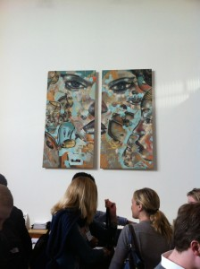

Day 5, Silicon Valley IXP
silicon-valley-ixpyear-twoFacebook company visit (Sheryl Sandberg [COO], Lori Goler [VP of People and Recruiting])

Sheryl Sandberg:
Many things are better with social. Why do people play Zynga instead of sophisticated games? It's not because of "features" or realism or graphics.
{kind=link}
Career advice:\
Get your hands dirty. Get a sales or marketing or operations job. And do real work.
"I still do sales calls." -- Sheryl Sandberg
Look for growing companies. Growth is more important than titles/"level" at every stage of your career.
"Get on a rocket ship, and good things will happen." -- Eric Schmidt
On finding mentors:
Relationships are based on "real stuff." Be the best, and you will develop mentors. Don't e-mail them and ask if they will sponsor you.
"Wait, what's Big Data?" -- Sheryl Sandberg
Data alone is useless. Similar reaction to 'credentialing.'
Lori Goler:
The answer to basically every case at HBS is "get the right people." So probably you should think about how to do that.
Came to Facebook because of Zuck's vision: connecting people to the people and things that are important to them.
Strong institutional focus on impact. (Reflection: Is this really a value? I'm not sure; I wanted to push back but ran out of time.)
On her initial hesitancy to become HR lead at Facebook:
"No man would ever turn down more responsibility!" -- Sheryl Sandberg
Reflections on an Entrepreneurial Career in SV (Randy Komisar)
Consumer web is a small part of the world, even the venture world. And TechCrunch has become the People Magazine of the IT business.
Why is it hyped? Low barriers to entry.
Consequence: consumer web is more like the media business than the innovation business.
There were 12 Instagrams when Instagram started; now there's only one. And the critical factor was probably not technology.
Theses for the future: Internet of Things (Nest, other devices that work so well that people bring them into their lives). Big Data and how we use it.
Why big-name venture still chases trends: because their business works best when I read about KPCB in TechCrunch every day.
Overall personal take-away:
Build stuff you care about; don't chase fads and gold rushes. Life is too short.
- Next: Day 4, Silicon Valley IXP
- Previous: Day 3, Silicon Valley IXP